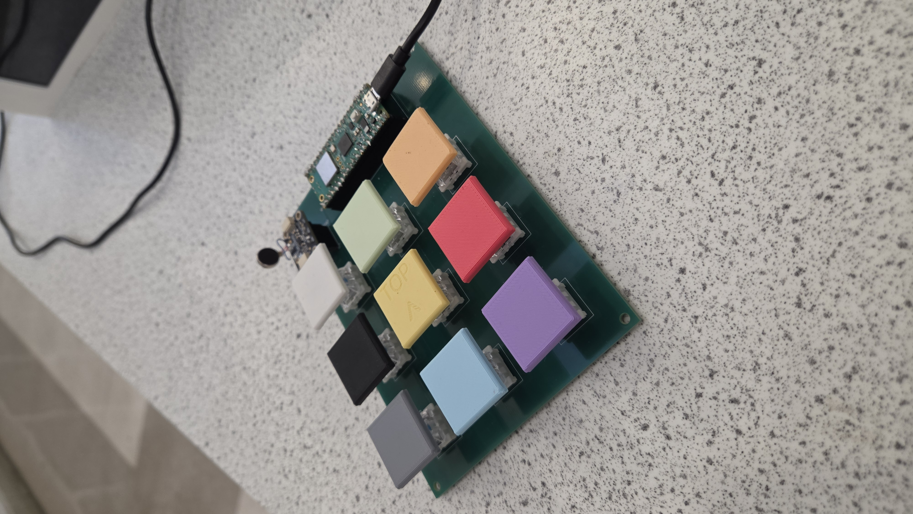
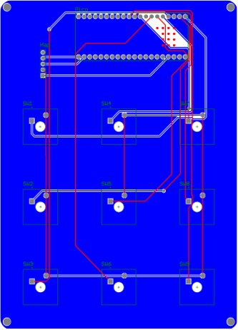
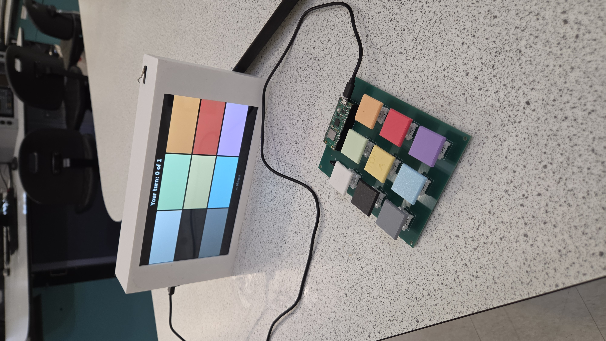

About
I'm a Computer Engineering student at the University of Colorado Boulder (class of 2030). I like projects where hardware, software, and networks meet, from designing a custom PCB to running my own home lab. I also do freelance web and IT work for a client, and I competed in gymnastics at the national level.
Featured Project
GameGrid: Accessible Game Controller
GameGrid is a handheld 3x3 button game system built for people who find traditional controllers overwhelming. Simple controls and haptic feedback keep the games engaging without needing fine motor skills. It plays Tic-Tac-Toe and Simon Says.
- Led the team through the proposal, preliminary design review, and critical design review.
- Designed the controller PCB in Altium and built a working protoboard prototype.
- Programmed a Raspberry Pi Pico in Python to read nine buttons and stream their state over serial to a Raspberry Pi 4 at about 20 Hz, and to trigger haptic feedback on each press.
- Wrote an 8-test verification plan with targets for response time (under 0.25 s), battery life (3.5 hours), and CPU temperature (under 60°C).



Freelance & Contract Work
Client Web Development & DNS Migration
- Rebuilt the web presence for an industrial environmental consulting firm using WordPress and Hostinger.
- Moved DNS records between IONOS and Hostinger without interrupting the client's Microsoft 365 email.
SharePoint Client Portal
- Designed a secure SharePoint Online portal to replace legacy Google Drive sharing, with segregated libraries and View Only vs. Upload access for 15+ external clients.
- Wrote PowerShell scripts and JSON theme payloads to automate site setup, themes, and navigation.
Personal Projects
UniFi Network Migration & PoE Surveillance
Migrated my home network from TP-Link to Ubiquiti UniFi (Cloud Gateway Ultra, U6+ access point), reconfiguring routing, firewall rules, and Wi-Fi coverage. Deployed a PoE camera recorded through Synology Surveillance Station.
Bluetooth Car Audio Bridge
A headless Raspberry Pi 4 that auto-pairs with my phone and streams audio through a USB sound card to the car's AUX input, using custom Bash scripts and systemd services for pairing and safe shutdown.
Home Network Build
Designed a multi-switch network (two Cisco 2960X switches, access points, MoCA) and run AdGuard DNS to filter traffic for 90+ devices.
Smart Rocket Launch Platform
Built a motorized barrel tilt, a 3D-printed rocket with an Arduino Nano altimeter for flight data, and an air cannon powered by a DeWalt 12V battery and dual ESP32s, remote-fired through Home Assistant and MQTT.
Google Calendar to Todoist Automator
A Python service that pulls assignments from Google Calendar, categorizes them with the OpenAI API, and pushes them into Todoist with links.
Technical Skills
Networking: Cisco and UniFi switch/AP configuration, multi-subnet segmentation, DNS management (A, CNAME, MX, SPF)
Systems & Servers: Windows and Linux administration, Docker, Synology DSM, Raspberry Pi 4 and 5, Bash, Python, PowerShell
Cloud & IT: Google Cloud (Compute Engine, IAM), AWS, Microsoft 365 Admin Center, Entra ID, SharePoint Online
IoT & Embedded: ESP32/8266, Raspberry Pi Pico, Arduino, MQTT, Home Assistant, ESPHome, PCB design (Altium)
Web & Design: WordPress, Blender, 3D modeling and printing